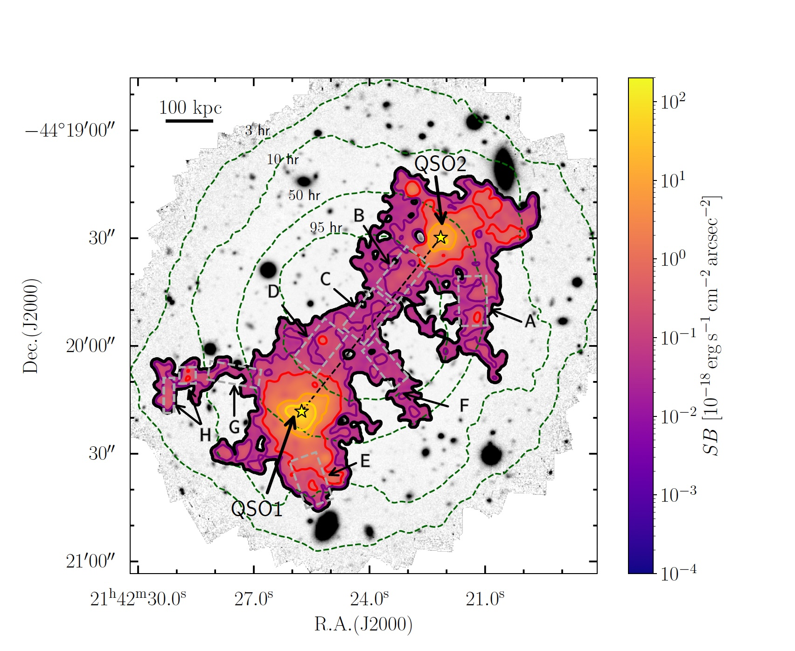
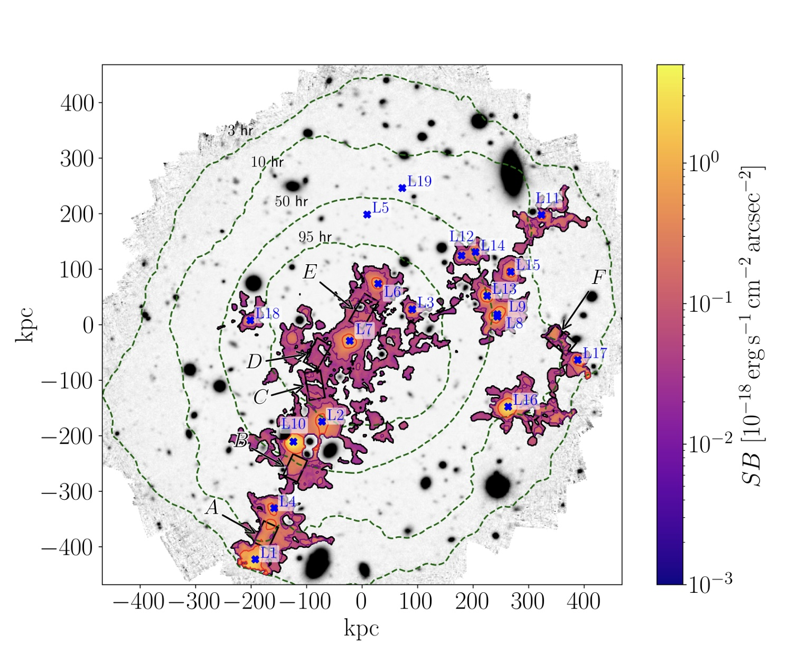
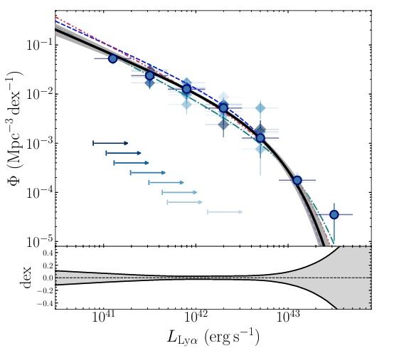

Research
All Publications
View all my publications on NASA ADS:
View on ADS →Click the button above to see all my papers with full details, citations, and access to PDFs

Tornotti et al. 2025a - Nature Astronomy

Tornotti et al. 2025b - ApJL

Tornotti et al. 2025c - A&A
View all my publications on NASA ADS:
View on ADS →Click the button above to see all my papers with full details, citations, and access to PDFs